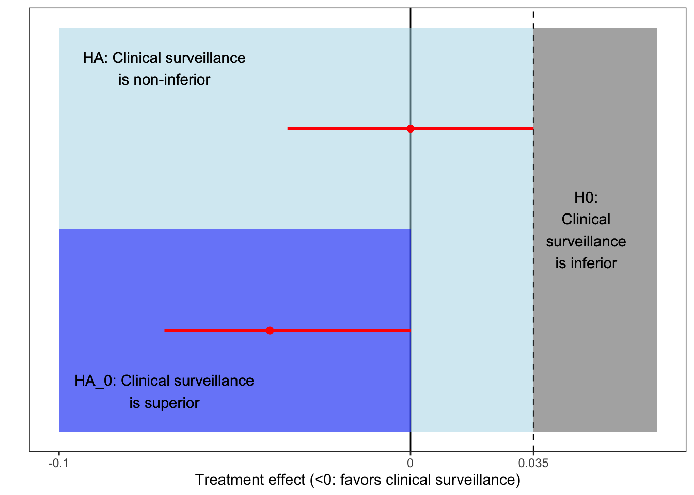

Chapter 2 Two-arm non-inferiority setting
In this section we consider a non-inferiority clinical trial setting with a null hypothesis \(H_0: \delta > \delta^*\) and alternative hypothesis \(H_a: \delta \leq \delta^*\), where \(\delta^*>0\) is a fixed non-inferiority margin and a treatment effect \(\delta\).

2.1 Binomial outcome
Here \(\delta=p_1-p_0\), where \(p_i\), \(i\in \{0,1\}\), are event probabilities for two groups.
Working example
We use the SAFE-SSPE as a working example [3].
For example, \(H_0\) is ‘clinical surveillance is inferior to an active treatment’ versus \(H_a\) ‘clinical surveillance is non-inferior to an active treatment’. The primary outcome is a risk difference with an non-inferiority margin of 3.5%.
2.1.1 Frequentist sample size
Let \(Y_{i,k} \sim^{iid} Bernoulli(p_i)\), \(k=1,\dots,n_i\), \(i\in \{0,1\}\). Let \(\overline p_i=\frac{1}{n_i}\sum_{k\leq n_i} Y_{i,k}\), \(i\in {0,1}\), and thus the risk difference \(D=\overline p_1-\overline p_0\) is Gaussian distributed with \(D \sim N\left(\delta, \frac{\sigma_1^2}{n_1}+\frac{\sigma_0^2}{n_0}\right)\), where \(\sigma_i^2=p_i(1-p_i)\), \(i\in \{0,1\}\).
We are interested whether the upper \((1-\alpha)\%\)-confidence limit is smaller than the non-inferiority margin, that is, \[ D+z_{1-\alpha}\sqrt{\frac{n_0\sigma_1^2+n_1\sigma_0^2}{n_1n_0}}\leq \delta^*, \] where \(z_{1-\alpha}=\Phi^{-1}(1-\alpha)\) with \(\Phi^{-1}\), the quantile function of the standard Gaussian distribution function.
Because \[ D\leq -z_{1-\alpha}\sqrt{\frac{n_0\sigma_1^2+n_1\sigma_0^2}{n_1n_0}}+\delta^* \] we have that, for \(\Phi\) being the probability distribution function of the standard Gaussian distribution, \[ P(S^{F}|\delta)=P_{\delta}(Z\leq - z_{1-\alpha})= \Phi\left(-z_{1-\alpha}-\sqrt{\frac{n_1n_0}{n_0\sigma_1^2+n_1\sigma_0^2}}(\delta-\delta^*)\right), \] since under certain regularity conditions, \[ Z=\sqrt{\frac{n_1n_0}{n_0\sigma_1^2+n_1\sigma_0^2}}(D-\delta) \rightarrow^{\min\{n1,n_0\} \rightarrow \infty} N(0,1). \] For an alternative point difference \(\delta_A\) we have that \(P_{\delta_A}(Z\leq - z_{1-\alpha})=1-\beta\), which is known as the frequentist power (or the probability of rejection given \(\delta_A\)). From that we have that
\[ -z_{1-\alpha}-\sqrt{\frac{n_1n_0}{n_0\sigma_1^2+n_1\sigma_0^2}}(\delta-\delta^*)=\Phi^{-1}(1-\beta)=z_{1-\beta} \] and so the frequentist sample size can then be derived as \[ \frac{(z_{1-\beta}+z_{1-\alpha})^2}{(\delta-\delta^*)^2}=\frac{an_0^2}{n_0\sigma_1^2+an_0\sigma_0^2}, \] where \(a=n_1/n_0\) is an allocation ratio, such that \[ n_0=(z_{1-\beta}+z_{1-\alpha})^2\frac{\sigma_1^2+a\sigma_0^2}{a(\delta-\delta^*)^2}, \quad n_1=an_0. \]
\(\delta_A\) and \(\delta^*\) are assumed as fixed constants in a frequentist approach. Their choices are of high importance, because all trial conclusions are based on those choices and affect the sample size calculation. The plot below shows how the sample size increase as \(\delta^* \rightarrow \delta\).

2.1.2 Frequentist sample size: Calculation in R
The following \(R\) function can be used to calculate the required sample size.
- \(p_1=0.01\), \(p_0=0.01\), \(\delta^*=0.035\), \(1-\beta=0.8\), \(\alpha=0.05\), \(a=1/1\)
library(epiR)
alpha <- 0.05
beta <- 0.2
p_0 <- 0.01
p_1 <- 0.01
delta <- p_1-p_0
delta_star <- 0.035
sd_0 <- sqrt(p_0*(1-p_0))
sd_1 <- sqrt(p_1*(1-p_1))
a <- 1/1
epi.ssninfb(treat=p_1, control=p_0, delta=delta_star, power=1-beta, r=a, alpha=alpha, n=NA)## $n.total
## [1] 200
##
## $n.treat
## [1] 100
##
## $n.control
## [1] 100
##
## $delta
## [1] 0.035
##
## $power
## [1] 0.8n_0 <- ((qnorm(1-beta)+qnorm(1-alpha))^2)*((sd_1^2+a*sd_0^2)/(a*(delta-delta_star)^2))
n_0## [1] 99.93031n_1 <- n_0*a
n_1## [1] 99.930312.1.3 Hybrid approach: Prior on treatment effect
Suppose that the true treatment effect \(\delta\) is a realization from a random variable \(\Delta\) such that \(\Delta \sim p(\delta)\). In this subsection we assume that the prior comes from a Gaussian distribution function so that \(\Delta \sim N\left(d, \frac{\sigma_1^2+\sigma_0^2}{m}\right)\). This prior can be thought as a realisation from a ‘prior sample’ of size \(m\).
In the following we use the following priors:
- Enthusiastic prior (favors non-inferiority): \(d=0\), \(m=6.6\), \(P(\Delta>\delta^*)=0.05\). This prior is centered on the treatment effect such that there is a low probability (here 5%) of inferiority.
- Skeptical prior (favors inferiority): \(d=\delta^*\), \(m=6.6\), \(P(\Delta>0)=0.05\). This prior is centered on the non-inferiority margin such that there is a low probability (here 5%) of superiority.
- Informative prior (clinical expert knowledge): \(d=0\) with \(m=25\).
- Noninformative prior: \(d=0\) with \(m=0.5\).

Let \[ AP:=\int_{\Delta} P(S^{F}|\delta)p(\delta)d\delta, \]
be the ‘average power’ [4] (other terminologies which are often used for the same estimator: assurance [5], probability of success [1], [2]). Remember that in an hybrid approach we are interested in trial conclusions from a frequentist point of view, thus we are interested in
\[ D\leq -z_{1-\alpha}\sqrt{\frac{n_0\sigma_1^2+n_1\sigma_0^2}{n_1n_0}}+\delta^*. \] By using a design prior we want to take into account the uncertainty of the treatment effect. The predictive distribution from a risk difference from future observations, say \(\tilde D\sim f(\tilde\delta)\), includes this uncertainty. For the Gaussian case, the predictive distribution of \(\tilde D\) is distributed as \(\tilde D \sim N\left(d, \underbrace{\frac{\sigma_1^2}{n_1}+\frac{\sigma_0^2}{n_0}+\frac{\sigma_1^2}{m}+\frac{\sigma_0^2}{m}}_{\tilde\sigma^2}\right)\), see for example [2]. Let in the following \(c_i=\frac{m+n_i}{m}\), then \(\tilde\sigma^2=\frac{\sigma_1^2c_1}{n_1}+\frac{\sigma_0^2c_0}{n_0}\).
Suppose now that \(D\) has a predictive distribution as described above, then \[ AP=\int_{-\infty}^{-z_{1-\alpha}\sqrt{\frac{n_0\sigma_1^2+n_1\sigma_0^2}{n_1n_0}}+\delta^*}f(\tilde\delta)d\tilde\delta= \Phi\left(-z_{1-\alpha}\sqrt{\frac{n_0\sigma_1^2+n_1\sigma_0^2}{n_0\sigma_1^2c_1+n_1\sigma_0^2c_0}}-\sqrt{\frac{n_1n_0}{n_0\sigma_1^2c_1+n_1\sigma_0^2c_0}}(d-\delta^*)\right), \] see for example [4]. Note that as \(m \rightarrow \infty\), then \(c_i \rightarrow 1\), \(i\in {0,1}\), and \(AP \rightarrow \Phi\left(-z_{1-\alpha}-\sqrt{\frac{n_1n_0}{n_0\sigma_1^2+n_1\sigma_0^2}}(d-\delta^*)\right)\), that is, the frequentist power at \(d\).
Working example (continued)
# Enthusiastic prior
m <- 6.6
c_1 <- (m+n_1)/m
c_0 <- (m+n_0)/m
prior_mean <- 0
AP <- pnorm(-qnorm(1-alpha)*sqrt(n_0*sd_1^2+n_1*sd_0^2)/sqrt(n_0*sd_1^2*c_1+n_1*sd_0^2*c_0)-(sqrt(n_0*n_1)/sqrt(n_0*sd_1^2*c_1+n_1*sd_0^2*c_0))*(prior_mean-delta_star))
data_output <- data.frame(type="Enthusiastic", n_0, n_1, AP=round(AP,2))
# Skeptical prior
m <- 6.6
c_1 <- (m+n_1)/m
c_0 <- (m+n_0)/m
prior_mean <- delta_star
AP <- pnorm(-qnorm(1-alpha)*sqrt(n_0*sd_1^2+n_1*sd_0^2)/sqrt(n_0*sd_1^2*c_1+n_1*sd_0^2*c_0)-(sqrt(n_0*n_1)/sqrt(n_0*sd_1^2*c_1+n_1*sd_0^2*c_0))*(prior_mean-delta_star))
data_output <- rbind(data_output, data.frame(type="Skeptical", n_0, n_1, AP=round(AP,2)))
# Informative prior
m <- 25
c_1 <- (m+n_1)/m
c_0 <- (m+n_0)/m
prior_mean <- 0
AP <- pnorm(-qnorm(1-alpha)*sqrt(n_0*sd_1^2+n_1*sd_0^2)/sqrt(n_0*sd_1^2*c_1+n_1*sd_0^2*c_0)-(sqrt(n_0*n_1)/sqrt(n_0*sd_1^2*c_1+n_1*sd_0^2*c_0))*(prior_mean-delta_star))
data_output <- rbind(data_output, data.frame(type="Informative", n_0, n_1, AP=round(AP,2)))
# Noninformative prior
m <- 0.5
c_1 <- (m+n_1)/m
c_0 <- (m+n_0)/m
prior_mean <- 0
AP <- pnorm(-qnorm(1-alpha)*sqrt(n_0*sd_1^2+n_1*sd_0^2)/sqrt(n_0*sd_1^2*c_1+n_1*sd_0^2*c_0)-(sqrt(n_0*n_1)/sqrt(n_0*sd_1^2*c_1+n_1*sd_0^2*c_0))*(prior_mean-delta_star))
data_output <- rbind(data_output, data.frame(type="Noninformative", n_0, n_1, AP=round(AP,2)))
data.frame(data_output %>% arrange(type))## type n_0 n_1 AP
## 1 Enthusiastic 99.93031 99.93031 0.58
## 2 Informative 99.93031 99.93031 0.65
## 3 Noninformative 99.93031 99.93031 0.52
## 4 Skeptical 99.93031 99.93031 0.34Rufibach et al. give a closed a formula for the distribution of \(RPR:=P_{\Delta}(Z\leq - z_{1-\alpha})\), where \(\Delta \sim N(d,\tilde\sigma^2/n_0)\), and discuss the shape under different prior choices [6]. In the following we use the wording ’random probability to reject` (RPR) similar to [1].
Working example (continued)
x <- seq(0.001,0.999,0.001)
m <- 6.6
prior_mean <- 0
## Rufibach 2016: formula (4)
y <- sqrt(sd_1^2/n_1+sd_0^2/n_0)/(sqrt(sd_tilde^2/m))*dnorm(-sqrt(sd_1^2/n_1+sd_0^2/n_0)/(sqrt(sd_tilde^2/m))*qnorm(1-alpha)-sqrt(m)/sd_tilde*(prior_mean-delta_star)-sqrt(sd_1^2/n_1+sd_0^2/n_0)/(sqrt(sd_tilde^2/m))*qnorm(x))*(dnorm(qnorm(x)))^(-1)
data_power <- data.frame(x, y, type="Enthusiastic")
m <- 6.6
prior_mean <- delta_star
y <- sqrt(sd_1^2/n_1+sd_0^2/n_0)/(sqrt(sd_tilde^2/m))*dnorm(-sqrt(sd_1^2/n_1+sd_0^2/n_0)/(sqrt(sd_tilde^2/m))*qnorm(1-alpha)-sqrt(m)/sd_tilde*(prior_mean-delta_star)-sqrt(sd_1^2/n_1+sd_0^2/n_0)/(sqrt(sd_tilde^2/m))*qnorm(x))*(dnorm(qnorm(x)))^(-1)
data_power <- rbind(data_power, data.frame(x, y, type="Skeptical"))
m <- 25
prior_mean <- 0
y <- sqrt(sd_1^2/n_1+sd_0^2/n_0)/(sqrt(sd_tilde^2/m))*dnorm(-sqrt(sd_1^2/n_1+sd_0^2/n_0)/(sqrt(sd_tilde^2/m))*qnorm(1-alpha)-sqrt(m)/sd_tilde*(prior_mean-delta_star)-sqrt(sd_1^2/n_1+sd_0^2/n_0)/(sqrt(sd_tilde^2/m))*qnorm(x))*(dnorm(qnorm(x)))^(-1)
data_power <- rbind(data_power, data.frame(x, y, type="Informative"))
m <- 0.5
prior_mean <- 0
y <- sqrt(sd_1^2/n_1+sd_0^2/n_0)/(sqrt(sd_tilde^2/m))*dnorm(-sqrt(sd_1^2/n_1+sd_0^2/n_0)/(sqrt(sd_tilde^2/m))*qnorm(1-alpha)-sqrt(m)/sd_tilde*(prior_mean-delta_star)-sqrt(sd_1^2/n_1+sd_0^2/n_0)/(sqrt(sd_tilde^2/m))*qnorm(x))*(dnorm(qnorm(x)))^(-1)
data_power <- rbind(data_power, data.frame(x, y, type="Noninformative"))
data_output2 <- data_output %>% select(type, x=AP) %>% mutate(y=0)
ggplot(data_power, aes(x, y, colour=type))+geom_line(linewidth=1)+geom_point(data=data_output2, aes(x=x, y=y, colour=type))+scale_colour_manual("Prior type", values=c("purple", "orange", "blue", "darkred"))+theme_bw()+theme(panel.grid = element_blank())+ylab("Density")+xlab("RPR")+ylim(c(0,2))